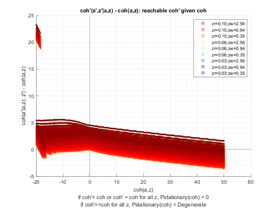

Derive Distributions for Save + Borrow One Asset (Wrapper)
back to Fan's Dynamic Assets Repository Table of Content.
Contents
function [result_map] = ff_abz_ds_wrapper(varargin)
FF_ABZ_DS_WRAPPER finds the stationary asset distributions
This is a warpper function. Note that when invoked by abz, there are two shocks, one for wage, another for the borrowing interest rate.
@example
it_param_set = 9; [param_map, support_map] = ffs_abz_set_default_param(it_param_set); [armt_map, func_map] = ffs_abz_get_funcgrid(param_map, support_map); result_map = ff_abz_vf_vecsv(param_map, support_map, armt_map, func_map); result_map = ff_az_ds_vecsv(param_map, support_map, armt_map, func_map, result_map); tb_outcomes = result_map('tb_outcomes'); cl_mt_pol_a = result_map('cl_mt_pol_a'); ds_stats_pol_a_map = cl_mt_pol_a{2}; ds_stats_pol_a_map_keys = ds_stats_pol_a_map.keys; ds_stats_pol_a_map('mt_choice_prob_byYZ');
@include
- ffs_abz_set_default_param
- ffs_abz_get_funcgrid
- save + borr optimized-vectorized: ff_abz_vf_vecsv
- derive distribution f(y'(y,z)) one asset loop: ff_az_ds
- derive distribution f(y'({y},z)) or f(y'({x,y},z)) vectorized: ff_az_ds_vec
- derive distribution f(y'({y},z)) or f(y'({x,y},z)) semi-analytical: ff_az_ds_vecsv
Default
- it_subset = 5 is basic invoke quick test
- it_subset = 6 is invoke full test
- it_subset = 7 is profiling invoke
- it_subset = 8 is matlab publish
- it_subset = 9 is invoke operational (only final stats) and coh graph
it_param_set = 8; bl_input_override = true; [param_map, support_map] = ffs_abz_set_default_param(it_param_set); % Note: param_map and support_map can be adjusted here or outside to override defaults % param_map('it_a_n') = 750; % param_map('fl_z_r_borr_n') = 5; % param_map('it_z_wage_n') = 15; % param_map('it_z_n') = param_map('it_z_wage_n') * param_map('fl_z_r_borr_n'); % param_map('fl_r_save') = 0.025; % These parameters below for comparison with abz_fibs model % param_map('fl_r_save') = 0.025; % param_map('fl_c_min') = 0.02; % param_map('fl_z_r_borr_poiss_mean') = 20; % param_map('fl_z_r_borr_max') = 0.035; % param_map('fl_z_r_borr_min') = 0.035; % param_map('fl_z_r_borr_n') = 1; % param_map('it_z_n') = param_map('it_z_wage_n') * param_map('fl_z_r_borr_n'); % param_map('bl_default') = true; % param_map('st_analytical_stationary_type') = 'loop'; % param_map('st_analytical_stationary_type') = 'vector'; param_map('st_analytical_stationary_type') = 'eigenvector'; % get armt and func map [armt_map, func_map] = ffs_abz_get_funcgrid(param_map, support_map, bl_input_override); % 1 for override default_params = {param_map support_map armt_map func_map};
Parse Parameters 1
% if varargin only has param_map and support_map, params_len = length(varargin); [default_params{1:params_len}] = varargin{:}; param_map = [param_map; default_params{1}]; support_map = [support_map; default_params{2}]; if params_len >= 1 && params_len <= 2 % If override param_map, re-generate armt and func if they are not % provided bl_input_override = true; [armt_map, func_map] = ffs_abz_get_funcgrid(param_map, support_map, bl_input_override); else % Override all armt_map = [armt_map; default_params{3}]; func_map = [func_map; default_params{4}]; end % if profile, profile DP + Dist here support_map('bl_profile_dist') = false; % append function name st_func_name = 'ff_abz_ds_wrapper'; support_map('st_profile_name_main') = [st_func_name support_map('st_profile_name_main')]; support_map('st_mat_name_main') = [st_func_name support_map('st_mat_name_main')]; support_map('st_img_name_main') = [st_func_name support_map('st_img_name_main')];
Parse Parameters
% param_map params_group = values(param_map, {'st_analytical_stationary_type'}); [st_analytical_stationary_type] = params_group{:}; % support_map params_group = values(support_map, ... {'st_profile_path', 'st_profile_prefix', 'st_profile_name_main', 'st_profile_suffix','bl_time'}); [st_profile_path, st_profile_prefix, st_profile_name_main, st_profile_suffix, bl_time] = params_group{:};
Start Profiler and Timer
Start Profile
if (it_param_set == 7) close all; profile off; profile on; end % Start Timer if (bl_time) tic; end
Solve DP
bl_input_override = true; result_map = ff_abz_vf_vecsv(param_map, support_map, armt_map, func_map);
Elapsed time is 12.042616 seconds.
----------------------------------------
----------------------------------------
xxxxxxxxxxxxxxxxxxxxxxxxxxxxxxxxxxxxxxxx
xxxxxxxxxxxxxxxxxxxxxxxxxxxxxxxxxxxxxxxx
Begin: Show all key and value pairs from container
CONTAINER NAME: SUPPORT_MAP
----------------------------------------
Map with properties:
Count: 40
KeyType: char
ValueType: any
xxxxxxxxxxxxxxxxxxxxxxxxxxxxxxxxxxxxxxxx
xxxxxxxxxxxxxxxxxxxxxxxxxxxxxxxxxxxxxxxx
----------------------------------------
----------------------------------------
pos = 26 ; key = st_img_name_main ; val = ff_abz_vf_vecsvff_abz_ds_wrapper_default
pos = 27 ; key = st_img_path ; val = C:/Users/fan/CodeDynaAsset//m_abz//solve/img/
pos = 28 ; key = st_img_prefix ; val =
pos = 29 ; key = st_img_suffix ; val = _p8.png
pos = 30 ; key = st_mat_name_main ; val = ff_abz_vf_vecsvff_abz_ds_wrapper_default
pos = 31 ; key = st_mat_path ; val = C:/Users/fan/CodeDynaAsset//m_abz//solve/mat/
pos = 32 ; key = st_mat_prefix ; val =
pos = 33 ; key = st_mat_suffix ; val = _p8
pos = 34 ; key = st_mat_test_path ; val = C:/Users/fan/CodeDynaAsset//m_abz//test/ff_az_ds_vecsv/mat/
pos = 35 ; key = st_matimg_path_root ; val = C:/Users/fan/CodeDynaAsset//m_abz/
pos = 36 ; key = st_profile_name_main ; val = ff_abz_vf_vecsvff_abz_ds_wrapper_default
pos = 37 ; key = st_profile_path ; val = C:/Users/fan/CodeDynaAsset//m_abz//solve/profile/
pos = 38 ; key = st_profile_prefix ; val =
pos = 39 ; key = st_profile_suffix ; val = _p8
pos = 40 ; key = st_title_prefix ; val =
----------------------------------------
xxxxxxxxxxxxxxxxxxxxxxxxxxxxxxxxxxxxxxxx
Scalars in Container and Sizes and Basic Statistics
xxxxxxxxxxxxxxxxxxxxxxxxxxxxxxxxxxxxxxxx
i idx value
__ ___ _____
bl_display 1 1 0
bl_display_defparam 2 2 1
bl_display_dist 3 3 0
bl_display_final 4 4 0
bl_display_final_dist 5 5 1
bl_display_final_dist_detail 6 6 1
bl_display_funcgrids 7 7 0
bl_graph 8 8 1
bl_graph_coh_t_coh 9 9 1
bl_graph_funcgrids 10 10 0
bl_graph_onebyones 11 11 1
bl_graph_pol_lvl 12 12 0
bl_graph_pol_pct 13 13 0
bl_graph_val 14 14 0
bl_img_save 15 15 0
bl_mat 16 16 0
bl_post 17 17 1
bl_profile 18 18 0
bl_profile_dist 19 19 0
bl_time 20 20 1
it_display_every 21 21 20
it_display_final_colmax 22 22 15
it_display_final_rowmax 23 23 100
it_display_summmat_colmax 24 24 5
it_display_summmat_rowmax 25 25 5
----------------------------------------
----------------------------------------
xxxxxxxxxxxxxxxxxxxxxxxxxxxxxxxxxxxxxxxx
xxxxxxxxxxxxxxxxxxxxxxxxxxxxxxxxxxxxxxxx
Begin: Show all key and value pairs from container
CONTAINER NAME: ARMT_MAP
----------------------------------------
Map with properties:
Count: 6
KeyType: char
ValueType: any
xxxxxxxxxxxxxxxxxxxxxxxxxxxxxxxxxxxxxxxx
xxxxxxxxxxxxxxxxxxxxxxxxxxxxxxxxxxxxxxxx
----------------------------------------
----------------------------------------
----------------------------------------
xxxxxxxxxxxxxxxxxxxxxxxxxxxxxxxxxxxxxxxx
Matrix in Container and Sizes and Basic Statistics
xxxxxxxxxxxxxxxxxxxxxxxxxxxxxxxxxxxxxxxx
i idx rowN colN mean std min max
_ ___ ____ ____ ________ ________ ________ _______
ar_a 1 1 1 750 15 20.248 -20 50
ar_z_r_borr 2 2 1 5 0.06 0.02767 0.025 0.095
ar_z_r_borr_mesh_wage 3 3 1 55 0.06 0.024977 0.025 0.095
ar_z_r_borr_prob 4 4 1 5 0.2 0.26988 0.001552 0.64666
ar_z_wage_mesh_r_borr 5 5 1 55 1.1422 0.70079 0.34664 2.5613
mt_z_trans 6 6 55 55 0.018182 0.046336 0 0.24762
----------------------------------------
----------------------------------------
xxxxxxxxxxxxxxxxxxxxxxxxxxxxxxxxxxxxxxxx
xxxxxxxxxxxxxxxxxxxxxxxxxxxxxxxxxxxxxxxx
Begin: Show all key and value pairs from container
CONTAINER NAME: PARAM_MAP
----------------------------------------
Map with properties:
Count: 35
KeyType: char
ValueType: any
xxxxxxxxxxxxxxxxxxxxxxxxxxxxxxxxxxxxxxxx
xxxxxxxxxxxxxxxxxxxxxxxxxxxxxxxxxxxxxxxx
----------------------------------------
----------------------------------------
pos = 32 ; key = st_analytical_stationary_type ; val = eigenvector
pos = 33 ; key = st_model ; val = abz
pos = 34 ; key = st_z_r_borr_drv_ele_type ; val = unif
pos = 35 ; key = st_z_r_borr_drv_prb_type ; val = poiss
----------------------------------------
xxxxxxxxxxxxxxxxxxxxxxxxxxxxxxxxxxxxxxxx
Scalars in Container and Sizes and Basic Statistics
xxxxxxxxxxxxxxxxxxxxxxxxxxxxxxxxxxxxxxxx
i idx value
__ ___ ______
bl_b_is_principle 1 1 1
bl_default 2 2 1
bl_loglin 3 3 0
fl_a_max 4 4 50
fl_a_min 5 5 0
fl_b_bd 6 6 -20
fl_beta 7 7 0.94
fl_c_min 8 8 0.01
fl_crra 9 9 1.5
fl_default_aprime 10 10 0
fl_loglin_threshold 11 11 1
fl_nan_replace 12 12 -99999
fl_r_save 13 13 0.025
fl_tol_dist 14 14 1e-05
fl_tol_pol 15 15 1e-05
fl_tol_val 16 16 1e-05
fl_w 17 17 1.28
fl_z_r_borr_max 18 18 0.095
fl_z_r_borr_min 19 19 0.025
fl_z_r_borr_n 20 20 5
fl_z_r_borr_poiss_mean 21 21 10
fl_z_wage_mu 22 22 0
fl_z_wage_rho 23 23 0.8
fl_z_wage_sig 24 24 0.2
it_a_n 25 25 750
it_maxiter_dist 26 26 1000
it_maxiter_val 27 27 1000
it_tol_pol_nochange 28 28 25
it_trans_power_dist 29 29 1000
it_z_n 30 30 55
it_z_wage_n 31 31 11
----------------------------------------
----------------------------------------
xxxxxxxxxxxxxxxxxxxxxxxxxxxxxxxxxxxxxxxx
xxxxxxxxxxxxxxxxxxxxxxxxxxxxxxxxxxxxxxxx
Begin: Show all key and value pairs from container
CONTAINER NAME: FUNC_MAP
----------------------------------------
Map with properties:
Count: 7
KeyType: char
ValueType: any
xxxxxxxxxxxxxxxxxxxxxxxxxxxxxxxxxxxxxxxx
xxxxxxxxxxxxxxxxxxxxxxxxxxxxxxxxxxxxxxxx
----------------------------------------
----------------------------------------
pos = 1 ; key = f_awithr_to_anor ; val = @(fl_r_borr,bprime)(bprime.*(1./(1+fl_r_save)).*(bprime>0)+bprime.*(1./(1+fl_r_borr)).*(bprime<=0))
pos = 2 ; key = f_coh ; val = @(z,b)(z*fl_w+b)
pos = 3 ; key = f_cons_checkcmin ; val = @(fl_r_borr,z,b,bprime)((f_cons_coh(f_coh(z,b),fl_r_borr,bprime)).*((f_cons_coh(f_coh(z,b),fl_r_borr,bprime))>=fl_c_min)+fl_c_min.*((f_cons_coh(f_coh(z,b),fl_r_borr,bprime))<fl_c_min))
pos = 4 ; key = f_cons_coh ; val = @(coh,fl_r_borr,bprime)(coh-f_awithr_to_anor(fl_r_borr,bprime))
pos = 5 ; key = f_util_crra ; val = @(c)(((c).^(1-fl_crra)-1)./(1-fl_crra))
pos = 6 ; key = f_util_log ; val = @(c)log(c)
pos = 7 ; key = f_util_standin ; val = @(fl_r_borr,z,b)f_util_log(f_coh_princ(fl_r_borr,z,b).*(f_coh_princ(fl_r_borr,z,b)>0)+fl_c_min.*(f_coh_princ(fl_r_borr,z,b)<=0))
----------------------------------------
xxxxxxxxxxxxxxxxxxxxxxxxxxxxxxxxxxxxxxxx
Scalars in Container and Sizes and Basic Statistics
xxxxxxxxxxxxxxxxxxxxxxxxxxxxxxxxxxxxxxxx
i idx xFunction
_ ___ _________
f_awithr_to_anor 1 1 1
f_coh 2 2 2
f_cons_checkcmin 3 3 3
f_cons_coh 4 4 4
f_util_crra 5 5 5
f_util_log 6 6 6
f_util_standin 7 7 7
----------------------------------------
----------------------------------------
xxxxxxxxxxxxxxxxxxxxxxxxxxxxxxxxxxxxxxxx
xxxxxxxxxxxxxxxxxxxxxxxxxxxxxxxxxxxxxxxx
Begin: Show all key and value pairs from container
CONTAINER NAME: RESULT_MAP
----------------------------------------
Map with properties:
Count: 10
KeyType: char
ValueType: any
xxxxxxxxxxxxxxxxxxxxxxxxxxxxxxxxxxxxxxxx
xxxxxxxxxxxxxxxxxxxxxxxxxxxxxxxxxxxxxxxx
----------------------------------------
----------------------------------------
pos = 2 ; key = ar_st_pol_names ; val = cl_mt_val cl_mt_pol_a cl_mt_coh cl_mt_pol_c
----------------------------------------
xxxxxxxxxxxxxxxxxxxxxxxxxxxxxxxxxxxxxxxx
Matrix in Container and Sizes and Basic Statistics
xxxxxxxxxxxxxxxxxxxxxxxxxxxxxxxxxxxxxxxx
i idx rowN colN mean std min max
_ ___ ____ ____ _______ _______ ________ ______
ar_pol_diff_norm 1 1 128 1 93.572 518.21 0 4213.3
ar_val_diff_norm 2 3 128 1 20.861 55.494 0.036733 352.78
cl_mt_coh 3 4 750 55 15.077 20.234 -19.968 50.122
cl_mt_pol_a 4 5 750 55 14.054 18.931 -19.512 48.416
cl_mt_pol_c 5 6 750 55 2.535 1.2036 0.01 4.8627
cl_mt_val 6 7 750 55 5.4978 8.5328 -17.865 14.906
mt_pol_idx 7 8 750 55 368.17 209 1 746
mt_pol_perc_change 8 9 128 55 0.19713 0.33092 0 1
mt_val 9 10 750 55 5.4978 8.5328 -17.865 14.906
 
Derive Distribution
Note that the pYisMINY statistics show the proportion of households at the minimum borrowing bound, where default takes place, and shows therefore the fraction of households defaulting.
if (strcmp(st_analytical_stationary_type, 'loop')) result_map = ff_az_ds(param_map, support_map, armt_map, func_map, result_map, bl_input_override); elseif (strcmp(st_analytical_stationary_type, 'vector')) result_map = ff_az_ds_vec(param_map, support_map, armt_map, func_map, result_map, bl_input_override); elseif (strcmp(st_analytical_stationary_type, 'eigenvector')) result_map = ff_az_ds_vecsv(param_map, support_map, armt_map, func_map, result_map, bl_input_override); end
Elapsed time is 2.427392 seconds.
----------------------------------------
xxxxxxxxxxxxxxxxxxxxxxxxxxxxxxxxxxxxxxxx
Summary Statistics for: cl_mt_val
xxxxxxxxxxxxxxxxxxxxxxxxxxxxxxxxxxxxxxxx
----------------------------------------
fl_choice_mean
1.9417
fl_choice_sd
3.6144
fl_choice_coefofvar
1.8614
fl_choice_prob_zero
0
fl_choice_prob_below_zero
0.1724
fl_choice_prob_above_zero
0.8276
fl_choice_prob_max
3.9297e-31
tb_disc_cumu
cl_mt_valDiscreteVal cl_mt_valDiscreteValProbMass CDF cumsumFrac
____________________ ____________________________ _________ ___________
-17.865 3.1473e-05 0.0031473 -0.00028958
-17.794 -3.0949e-31 0.0031473 -0.00028958
-17.742 3.3643e-18 0.0031473 -0.00028958
-17.572 1.3222e-19 0.0031473 -0.00028958
-17.51 6.0384e-08 0.0031533 -0.00029012
-17.445 3.7341e-11 0.0031533 -0.00029012
-17.407 0.00011453 0.014606 -0.0013169
-17.385 1.1185e-31 0.014606 -0.0013169
-17.37 6.3327e-13 0.014606 -0.0013169
-17.35 2.0968e-15 0.014606 -0.0013169
cl_mt_valDiscreteVal cl_mt_valDiscreteValProbMass CDF cumsumFrac
____________________ ____________________________ ___ __________
14.828 -1.6872e-33 100 1
14.836 -9.0402e-31 100 1
14.845 -6.0203e-31 100 1
14.854 7.4508e-31 100 1
14.862 8.0075e-32 100 1
14.871 2.4095e-31 100 1
14.88 -3.523e-31 100 1
14.888 -1.4086e-32 100 1
14.897 -1.8436e-32 100 1
14.906 3.9297e-31 100 1
tb_prob_drv
percentiles cl_mt_valDiscreteValPercentileValues fracOfSumHeldBelowThisPercentile
___________ ____________________________________ ________________________________
0.1 -16.363 -0.0097198
1 -13.041 -0.075644
5 -5.5078 -0.25587
10 -1.9112 -0.34332
15 -0.41813 -0.3711
20 0.4289 -0.37006
25 1.051 -0.34991
35 1.8886 -0.27499
50 2.7933 -0.09621
65 3.559 0.15142
75 4.0499 0.34998
80 4.3741 0.45488
85 4.7024 0.57298
90 5.1565 0.69449
95 5.7987 0.83474
99 6.9592 0.96166
99.9 8.0892 0.99577
----------------------------------------
xxxxxxxxxxxxxxxxxxxxxxxxxxxxxxxxxxxxxxxx
Summary Statistics for: cl_mt_pol_a
xxxxxxxxxxxxxxxxxxxxxxxxxxxxxxxxxxxxxxxx
----------------------------------------
fl_choice_mean
-0.5805
fl_choice_sd
3.1855
fl_choice_coefofvar
-5.4872
fl_choice_prob_zero
0.0552
fl_choice_prob_below_zero
0.4866
fl_choice_prob_above_zero
0.4581
fl_choice_prob_max
3.9297e-31
tb_disc_cumu
cl_mt_pol_aDiscreteVal cl_mt_pol_aDiscreteValProbMass CDF cumsumFrac
______________________ ______________________________ __________ __________
-19.512 5.7067e-06 0.00057067 0.00019181
-19.185 4.6498e-05 0.0052205 0.0017284
-18.916 -3.6656e-32 0.0052205 0.0017284
-18.874 1.1435e-07 0.0052319 0.0017321
-18.868 0.00025012 0.030244 0.0098613
-18.692 -3.8996e-31 0.030244 0.0098613
-18.647 -3.5069e-32 0.030244 0.0098613
-18.603 2.6413e-32 0.030244 0.0098613
-18.6 1.0633e-08 0.030245 0.0098616
-18.561 0.00090636 0.12088 0.038841
cl_mt_pol_aDiscreteVal cl_mt_pol_aDiscreteValProbMass CDF cumsumFrac
______________________ ______________________________ ___ __________
47.595 -6.8315e-31 100 1
47.686 -1.1941e-30 100 1
47.778 -8.9105e-31 100 1
47.869 9.1082e-31 100 1
47.96 8.0075e-32 100 1
48.051 2.4095e-31 100 1
48.142 -3.523e-31 100 1
48.233 -1.4086e-32 100 1
48.325 -1.8436e-32 100 1
48.416 3.9297e-31 100 1
tb_prob_drv
percentiles cl_mt_pol_aDiscreteValPercentileValues fracOfSumHeldBelowThisPercentile
___________ ______________________________________ ________________________________
0.1 -18.561 0.038841
1 -15.107 0.29602
5 -6.5052 0.99106
10 -3.2092 1.3825
15 -2.0484 1.6017
20 -1.3878 1.7455
25 -0.96985 1.8457
35 -0.42675 1.9733
50 0 2.0152
65 0.36471 1.9642
75 0.72943 1.8786
80 1.003 1.8129
85 1.3677 1.7139
90 1.9147 1.5719
95 2.9177 1.3607
99 5.106 1.1074
99.9 7.9325 1.0149
----------------------------------------
xxxxxxxxxxxxxxxxxxxxxxxxxxxxxxxxxxxxxxxx
Summary Statistics for: cl_mt_coh
xxxxxxxxxxxxxxxxxxxxxxxxxxxxxxxxxxxxxxxx
----------------------------------------
fl_choice_mean
-0.5561
fl_choice_sd
3.4255
fl_choice_coefofvar
-6.1594
fl_choice_prob_zero
0
fl_choice_prob_below_zero
0.4503
fl_choice_prob_above_zero
0.5497
fl_choice_prob_max
-4.2670e-31
tb_disc_cumu
cl_mt_cohDiscreteVal cl_mt_cohDiscreteValProbMass CDF cumsumFrac
____________________ ____________________________ _________ __________
-19.968 5.811e-06 0.0005811 0.00020864
-19.946 5.811e-05 0.0063921 0.0022927
-19.923 0.00029055 0.035447 0.012701
-19.901 0.00096851 0.1323 0.047358
-19.878 0.0024213 0.37442 0.1339
-19.875 -4.1903e-32 0.37442 0.1339
-19.852 1.8092e-30 0.37442 0.1339
-19.83 2.8483e-32 0.37442 0.1339
-19.807 -3.5995e-31 0.37442 0.1339
-19.785 4.3791e-31 0.37442 0.1339
cl_mt_cohDiscreteVal cl_mt_cohDiscreteValProbMass CDF cumsumFrac
____________________ ____________________________ ___ __________
49.939 -2.0344e-30 100 1
49.961 -3.2522e-31 100 1
49.983 -3.3899e-32 100 1
50.006 2.4604e-31 100 1
50.028 6.9387e-31 100 1
50.032 3.1638e-31 100 1
50.054 -1.9218e-31 100 1
50.077 8.288e-31 100 1
50.099 1.0937e-30 100 1
50.122 -4.267e-31 100 1
tb_prob_drv
percentiles cl_mt_cohDiscreteValPercentileValues fracOfSumHeldBelowThisPercentile
___________ ____________________________________ ________________________________
0.1 -19.901 0.047358
1 -16.327 0.33247
5 -6.9812 1.1144
10 -3.3587 1.5476
15 -2.1214 1.7865
20 -1.3961 1.9405
25 -0.95124 2.0437
35 -0.34569 2.166
50 0.0992 2.1856
65 0.47303 2.1167
75 0.86926 1.9876
80 1.1496 1.909
85 1.5235 1.7937
90 2.0842 1.6319
95 3.1123 1.3956
99 5.3552 1.1168
99.9 8.2524 1.0161
----------------------------------------
xxxxxxxxxxxxxxxxxxxxxxxxxxxxxxxxxxxxxxxx
Summary Statistics for: cl_mt_pol_c
xxxxxxxxxxxxxxxxxxxxxxxxxxxxxxxxxxxxxxxx
----------------------------------------
fl_choice_mean
1.2628
fl_choice_sd
0.3286
fl_choice_coefofvar
0.2602
fl_choice_prob_zero
0
fl_choice_prob_below_zero
0
fl_choice_prob_above_zero
1.0000
fl_choice_prob_max
3.9297e-31
tb_disc_cumu
cl_mt_pol_cDiscreteVal cl_mt_pol_cDiscreteValProbMass CDF cumsumFrac
______________________ ______________________________ _______ __________
0.01 0.0036788 0.36788 2.9132e-05
0.32972 -3.0949e-31 0.36788 2.9132e-05
0.33966 3.3643e-18 0.36788 2.9132e-05
0.34444 6.3327e-13 0.36788 2.9132e-05
0.37096 6.7865e-13 0.36788 2.9132e-05
0.37601 1.3222e-19 0.36788 2.9132e-05
0.38079 2.8804e-16 0.36788 2.9132e-05
0.39078 6.0384e-08 0.36789 2.9151e-05
0.39556 1.7568e-07 0.36791 2.9206e-05
0.39799 1.924e-10 0.36791 2.9206e-05
cl_mt_pol_cDiscreteVal cl_mt_pol_cDiscreteValProbMass CDF cumsumFrac
______________________ ______________________________ ___ __________
4.8422 -1.6872e-33 100 1
4.8445 -9.0402e-31 100 1
4.8468 -6.0203e-31 100 1
4.849 7.4508e-31 100 1
4.8513 8.0075e-32 100 1
4.8536 2.4095e-31 100 1
4.8559 -3.523e-31 100 1
4.8582 -1.4086e-32 100 1
4.8604 -1.8436e-32 100 1
4.8627 3.9297e-31 100 1
tb_prob_drv
percentiles cl_mt_pol_cDiscreteValPercentileValues fracOfSumHeldBelowThisPercentile
___________ ______________________________________ ________________________________
0.1 0.01 2.9132e-05
1 0.84175 0.004324
5 0.87507 0.031433
10 0.90278 0.066737
15 0.93041 0.10325
20 0.96295 0.14111
25 0.99538 0.17937
35 1.0647 0.26324
50 1.198 0.39977
65 1.3842 0.55638
75 1.4959 0.66244
80 1.5326 0.72087
85 1.6352 0.78895
90 1.7486 0.85132
95 1.8762 0.92134
99 2.1349 0.98263
99.9 2.4061 0.99805
OriginalVariableNames cl_mt_val cl_mt_pol_a cl_mt_coh cl_mt_pol_c
_____________________ __________ ___________ __________ ___________
'mean' 1.9417 -0.58053 -0.55615 1.2628
'sd' 3.6144 3.1855 3.4255 0.32855
'coefofvar' 1.8614 -5.4872 -6.1594 0.26018
'min' -17.865 -19.512 -19.968 0.01
'max' 14.906 48.416 50.122 4.8627
'pYis0' 0 0.055249 0 0
'pYls0' 0.17243 0.48664 0.45027 0
'pYgr0' 0.82757 0.45811 0.54973 1
'pYisMINY' 3.1473e-05 5.7067e-06 5.811e-06 0.0036788
'pYisMAXY' 3.9297e-31 3.9297e-31 -4.267e-31 3.9297e-31
'p0_1' -16.363 -18.561 -19.901 0.01
'p1' -13.041 -15.107 -16.327 0.84175
'p5' -5.5078 -6.5052 -6.9812 0.87507
'p10' -1.9112 -3.2092 -3.3587 0.90278
'p15' -0.41813 -2.0484 -2.1214 0.93041
'p20' 0.4289 -1.3878 -1.3961 0.96295
'p25' 1.051 -0.96985 -0.95124 0.99538
'p35' 1.8886 -0.42675 -0.34569 1.0647
'p50' 2.7933 0 0.0992 1.198
'p65' 3.559 0.36471 0.47303 1.3842
'p75' 4.0499 0.72943 0.86926 1.4959
'p80' 4.3741 1.003 1.1496 1.5326
'p85' 4.7024 1.3677 1.5235 1.6352
'p90' 5.1565 1.9147 2.0842 1.7486
'p95' 5.7987 2.9177 3.1123 1.8762
'p99' 6.9592 5.106 5.3552 2.1349
'p99_9' 8.0892 7.9325 8.2524 2.4061
'fl_cov_cl_mt_val' 13.064 10.469 11.623 0.78105
'fl_cor_cl_mt_val' 1 0.90925 0.93881 0.65772
'fl_cov_cl_mt_pol_a' 10.469 10.147 10.168 0.54272
'fl_cor_cl_mt_pol_a' 0.90925 1 0.93184 0.51855
'fl_cov_cl_mt_coh' 11.623 10.168 11.734 0.62402
'fl_cor_cl_mt_coh' 0.93881 0.93184 1 0.55445
'fl_cov_cl_mt_pol_c' 0.78105 0.54272 0.62402 0.10795
'fl_cor_cl_mt_pol_c' 0.65772 0.51855 0.55445 1
'fracByP0_1' -0.0097198 0.038841 0.047358 2.9132e-05
'fracByP1' -0.075644 0.29602 0.33247 0.004324
'fracByP5' -0.25587 0.99106 1.1144 0.031433
'fracByP10' -0.34332 1.3825 1.5476 0.066737
'fracByP15' -0.3711 1.6017 1.7865 0.10325
'fracByP20' -0.37006 1.7455 1.9405 0.14111
'fracByP25' -0.34991 1.8457 2.0437 0.17937
'fracByP35' -0.27499 1.9733 2.166 0.26324
'fracByP50' -0.09621 2.0152 2.1856 0.39977
'fracByP65' 0.15142 1.9642 2.1167 0.55638
'fracByP75' 0.34998 1.8786 1.9876 0.66244
'fracByP80' 0.45488 1.8129 1.909 0.72087
'fracByP85' 0.57298 1.7139 1.7937 0.78895
'fracByP90' 0.69449 1.5719 1.6319 0.85132
'fracByP95' 0.83474 1.3607 1.3956 0.92134
'fracByP99' 0.96166 1.1074 1.1168 0.98263
'fracByP99_9' 0.99577 1.0149 1.0161 0.99805
End Profiler and Timer
End Timer
if (bl_time) toc; end % End Profile if (it_param_set == 7) profile off profile viewer st_file_name = [st_profile_prefix st_profile_name_main st_profile_suffix]; profsave(profile('info'), strcat(st_profile_path, st_file_name)); end
Elapsed time is 3.000471 seconds.
end
ans =
Map with properties:
Count: 13
KeyType: char
ValueType: any